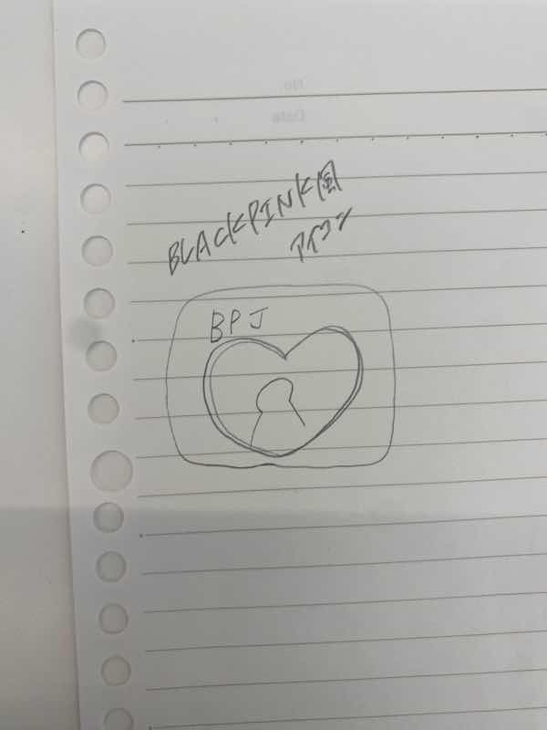
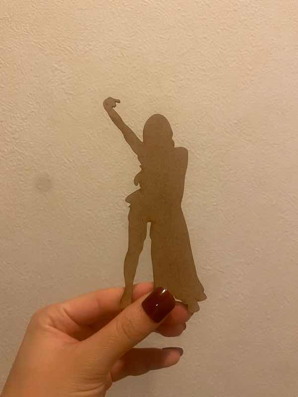
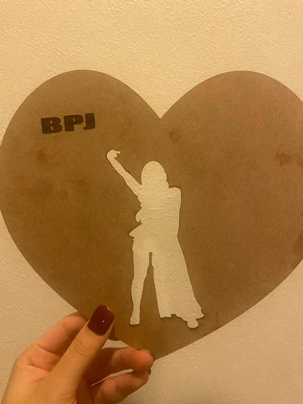
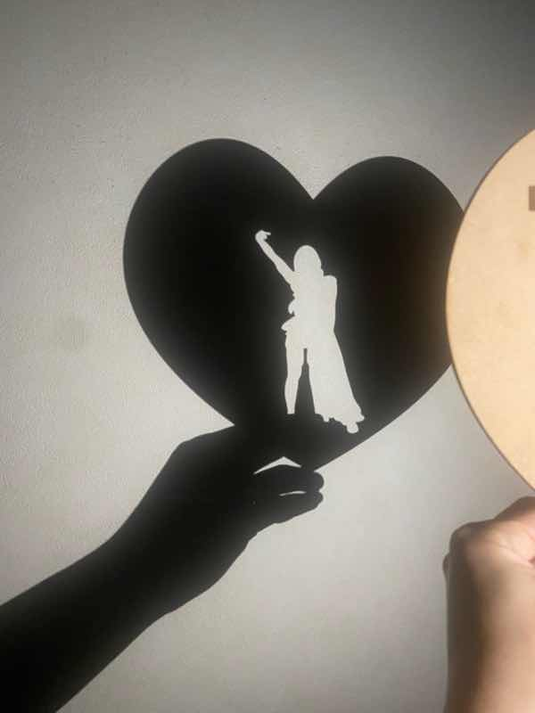

I love JENNIE of BLACKPINK!!
今回の課題で作成したのは、私の好きなアーティストBLACKPINKのメンバーであるJENNIEをモチーフにしたものだ。
タイトルは上記の通り、I love JENNIE of BLACKPINK!!
スケッチ・イメージ

実際の作品

スタンドをつけて置物にしたい

穴をあけて紐を通して壁に飾りたい

光をあてると壁にシルエットができる！かわいい！
設計ファイル
設計ファイル
作品の説明
BLACKPINKのJENNIEは韓国のアーティストで、世界で活躍している。有名ブランドのアンバサダーもしていて、私の憧れの人でもある。
JENNIEをモチーフにした作品を作ったら、それを見るだけで気分があがりそうだなと思い作成した。
中央に型取られたのはおそらくJENNIEのソロデビュー曲、SOLOのワンシーンのものだ。
今にもJENNIEが現れてパフォーマンスしてくれそうな臨場感や躍動感があるように思う。完成した作品を見てとても嬉しかった。
制作プロセスで調べたこと
以下の画像をネットから拾い参考にした。

SOLOのミュージックビデオ→ JENNIE-SOLO MV